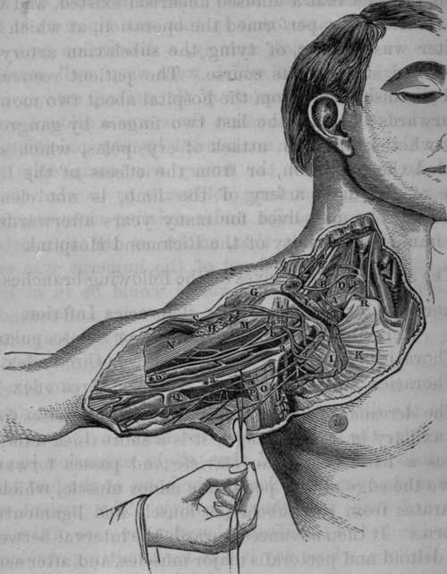

Case Of Rupture Of The Axillary Artery, Caused By Luxation Of The Head Of The Humerus Into The Axilla
Description
This section is from the book "Anatomy Of The Arteries Of The Human Body", by John Hatch Power. Also available from Amazon: Anatomy of the Arteries of the Human Body, with the Descriptive Anatomy of the Heart.
Case Of Rupture Of The Axillary Artery, Caused By Luxation Of The Head Of The Humerus Into The Axilla
John Smith, aged 50, was thrown down by a runaway horse one morning during the summer of 1833; in about ten minutes after this occurred he was brought to Jervis Street Hospital, when the writer, at that time one of the surgeons of the Institution, was prescribing for the extern patients. The man was in a cold perspiration, pallid, and apparently on the verge of syncope. The writer immediately observed that the patient had a dislocation of his left humerus into the axilla, and proceeding to point out, as was his custom, to the clinical class, the diagnostic marks of the luxation, he noticed that the cavity of the axilla was filled up to a remarkable degree. This sudden filling up of the axilla he immediately concluded could be attributed to no other source than to the laceration of a large artery. He quickly sought for the pulse in the radial and brachial artery of the dislocated limb, but no pulse could be felt in any artery below the site of the left subclavian, while the pulse, though feeble, could be readily felt at the heart, and in every external artery of the system, except in those of the dislocated arm. The writer then observed to the clinical class, that in this case there were two lesions to be noticed, namely, a dislocation into the axilla, the features of which were very well marked, complicated with a rupture of the axillary artery; in a word, besides the dislocation there was a diffused aneurism: the latter was unattended by any pulsation, so that he conjectured the artery was completely torn across. Ho did not long deliberate as to what course was the best to pursue under existing circumstances, because he felt sure that, so far as the torn artery was concerned, if the head of the humerus was once restored to its place, this vessel would be in at least as favorable a condition as it then was; and secondly, that the state of prostration and debility the patient was in at that moment, offered an opportunity which, if once lost, might not again be afforded, of reducing easily the dislocation. Taking the patient, therefore, unawares, the writer placed his knee in the axilla of the dislocated arm, and then, slight extension having been made over this fulcrum, the bone, at the first trial, returned into the glenoid cavity. The patient was placed in bed in the Hospital, under the care of the late Mr. Wallace, whose day it was for admitting accidents. There was much more superficial ecchymosis about the axillary and subclavian regions, and along the inside of the left arm, than is usually observed after a simple dislocation of the head of the humerus. The deep axillary swelling remained stationary for some days, but no pulsation could be discovered either in it or in the arteries of the limb. A feeble and frequent pulse could be felt in the left subclavian, and in all the other arteries, as well as in the heart. After the space of ten days, Mr. Wallace's month of attendance having expired, the case came under the care of Mr. O'Reilly, who, having been satisfied that a diffused aneurism existed, and was on the increase, performed the operations, at which the writer was present, of tying the subclavian artery in the third stage of its course. The patient recovered and was discharged from the hospital about two months afterwards; he lost the last two fingers by gangrene, but whether from an attack of erysipelas, which succeeded the operation, or from the effects of the ligature of the main artery of the limb, is not clearly known. The man lived for many years afterwards in the immediate vicinity of the Richmond Hospital.
Fig 25. Surgical Anatomy of the Right Subclavian and Axillary Arteries.
A, Subclavian Vein crossed by a small nerve from the Brachial Plexus to the Subclavius Muscle, which nerve gives a branch to the Phrenic. B, Subclavian Artery in third stage. C, Brachial Plexus of Nerves. D, Anterior Scalenus Muscle with the Phrenic Nerve descending upon it, and the Supra and Posterior Scapular Arteries crossing both : the Posterior Scapular in this case came from the Thyroid Axis: this is its usual origiu. E, Subclavius Muscle. F, Insertion of Scalenus Auticus Muscle into eminence on first rib. G, Clavicular origin of Deltoid Muscle. H, Humeral attachment of Pectoralis Major. I, Fascia investing the Pectoralis Minor. K, Thoracic portion of Pectoralis Major. L, Coracoid attachment of Pectoralis Minor divided and pendulous. M, Coraco-brachialis Muscle and Perforans Casserii Nerve. N. Biceps. O, Latissimus Dorsi crossed by the Nerves of Wrisberg. P, Teres Major Muscle. Q, Brachial Fascia. R, Sternal end of Clavicle. S Cephalic Vein passing between the Deltoid and Great Pectoral Muscles, and then in front of the Pectoralis Minor, to enter the Axillary Vein, a, Axillary Vein. *a. Basilic Vein, with Internal Cutaneous Nerve, b, Axillary Artery with the two heads of the Median Nerve. *b, Brachial Artery and Venae Comites.
The axillary artery gives off the following branches:—
Acromial, or Thoracica Thoracica Inferior.
Acromialis. Infra, or Sub-scapular.
Thoracica Suprema. Posterior Circumflex.
Thoracica Alaris. Anterior Circumflex.
Continue to:
- prev: Operation Of Tying The Axillary Artery In Its Third Stage
- Table of Contents
- next: The Acromial Or Thoracica Acromialis Artery